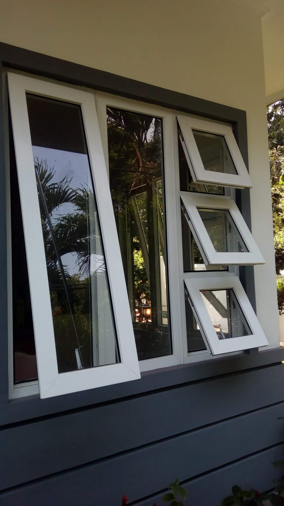

Bukaan dari sisi bawah
Daun bergerak keluar dari bawah, sehingga arah aliran udara dan jangkauan pengoperasian dapat direncanakan sesuai posisi jendela.
Jendela UPVC jungkit—juga dikenal sebagai jendela awning UPVC atau jendela top hung UPVC—memiliki engsel di sisi atas dan membuka keluar dari bagian bawah. Bentuk bukaan ini dapat menjadi pertimbangan saat Anda menginginkan aliran udara melalui bukaan yang tidak sepenuhnya terbuka. Posisi daun kadang membantu menghalangi gerimis ringan, tetapi bukan pengganti kanopi atau jaminan tahan hujan. Penentuan model, arah bukaan, dan komponennya perlu mengikuti hasil ukur serta kondisi bangunan.

Engsel berada di sisi atas dan bagian bawah daun bergerak keluar. Berbeda dari casement yang berengsel samping atau sliding yang bergeser, model ini memerlukan ruang bebas di luar. Periksa arah bukaan, jangkauan pegangan, dan tinggi pemasangan.
Aliran udara bergantung pada lebar bukaan dan kondisi ruangan; jendela bukan ventilasi mekanis. Rencanakan pula jalur udara masuk dan keluar.
Nilai fungsi bukaan bersama tata ruang dan paparan cuaca lokasi.
Daun bergerak keluar dari bawah, sehingga arah aliran udara dan jangkauan pengoperasian dapat direncanakan sesuai posisi jendela.
Daun yang terbuka dapat membantu menghalangi gerimis ringan pada keadaan tertentu. Hasilnya bukan perlindungan cuaca yang dijamin.
Model ini dapat dipertimbangkan untuk area yang memerlukan bukaan terkontrol, setelah akses, tinggi pemasangan, dan fungsi ruang ditinjau.
Jendela jungkit dapat dipertimbangkan untuk kamar, dapur, atau ruang lain sesuai kebutuhan udara dan privasi. Periksa ruang luar agar daun tidak bertabrakan dengan kanopi, balkon, atau jalur orang. Jendela tinggi memerlukan rencana aman untuk pengoperasian dan pembersihan.
Di sisi yang terpapar hujan, tinjau overhang, drainase, sambungan, dan kondisi ambang. Model ini tidak menjamin bebas hujan atau rembesan; kelayakan ditentukan melalui survei lokasi.
Evan UPVC berbasis di Bekasi dan melayani permintaan di Indonesia. Pengukuran serta pemasangan bergantung pada lokasi dan cakupan kerja; sebutkan alamat proyek saat konsultasi.
Rincian final dikonfirmasi pada setiap pesanan.
| Aspek | Informasi |
|---|---|
| Mekanisme | Engsel atas; bagian bawah daun membuka keluar sesuai rancangan. |
| Ukuran | Ditentukan dari pengukuran lokasi dan dicatat pada penawaran. |
| Warna dan finishing | Pilihan aktual dikonfirmasi sebelum persetujuan. |
| Kaca | Dipilih setelah kebutuhan ruang dan konfigurasi dikaji. |
| Perangkat | Engsel, pegangan, dan pengunci mengikuti konfigurasi pesanan. |
Konfirmasikan ukuran, pilihan, harga, cakupan pemasangan, jadwal, dan ketentuan secara tertulis. Foto hanya memberi gambaran tampilan.
Gunakan pegangan sesuai petunjuk dan gerakkan daun tanpa hentakan. Pastikan area luar bebas dari penghalang; jangan menjangkau jendela tinggi dari posisi berisiko.
Bersihkan profil dan kaca dengan kain lembut, jaga engsel serta pengunci dari debu, dan hindari alat tajam atau pelumas sembarang. Jika daun seret atau pengunci berubah, hentikan pemaksaan dan minta pemeriksaan.
Jungkit membuka dari bawah, casement berayun dari samping, fixed tidak dibuka, dan sliding bergeser. Bandingkan kebutuhan ventilasi, akses, serta ruang bebas.
Foto merupakan contoh tampilan, bukan acuan ukuran atau konfigurasi produksi.

Setiap rincian dipastikan sebelum pesanan diproses.
Jelaskan fungsi ruang, perkiraan posisi jendela, kebutuhan ventilasi, serta foto lokasi. Foto membantu diskusi awal dan tidak menggantikan pengukuran.
Periksa bukaan, kondisi dinding, arah daun, akses pemasangan, dan ruang bebas di luar. Catatan survei menjadi dasar pembahasan konfigurasi.
Pastikan ukuran, kaca, warna, perangkat, lingkup kerja, harga, jadwal, dan ketentuan tertulis dipahami sebelum memberi persetujuan.
Proses dilanjutkan setelah detail disepakati. Tinjau hasil pemasangan dan ikuti petunjuk pemakaian serta perawatan yang diberikan.
Engsel berada di sisi atas, sementara bagian bawah daun bergerak keluar saat dibuka. Bukaan dan perangkatnya perlu digunakan sesuai rancangan serta petunjuk pemasangan. Periksa ruang luar agar daun tidak bertabrakan dengan kanopi, pagar, atau jalur orang.
Posisi daun yang membuka keluar dari bawah dapat membantu menghalangi gerimis ringan dalam kondisi tertentu. Hal ini bukan jaminan kedap air atau perlindungan saat hujan deras dan angin; kecocokan bergantung pada lokasi, detail pemasangan, serta perlindungan bangunan.
Jendela top hung dapat dipertimbangkan pada kamar mandi, dapur, atau bukaan lain yang sesuai kebutuhan ventilasi dan kondisi dinding. Ruang luar, paparan hujan, privasi, akses membersihkan, serta ukuran bukaan perlu diperiksa sebelum menentukan kelayakan.
Pilihan kaca, warna, finishing, pegangan, pengunci, dan perangkat lain mengikuti konfigurasi serta ketersediaan aktual. Sampaikan kebutuhan ruang, lalu minta opsi, spesifikasi tertulis, dan rincian yang disepakati sebelum produksi; jangan mengasumsikan opsi tertentu tersedia.
Bersihkan bingkai dan kaca dengan kain lembut, jaga area engsel serta pengunci dari debu, dan buka-tutup tanpa hentakan. Jangan memaksa daun yang seret atau mengoleskan bahan sembarang pada perangkat. Minta pemeriksaan jika gerak atau penguncian berubah.
Diskusikan kebutuhan dan kirim foto lokasi sebagai gambaran awal, lalu jadwalkan pengukuran. Tinjau ukuran, arah bukaan, kaca, finishing, aksesori, cakupan kerja, dan penawaran tertulis. Produksi serta pemasangan dilanjutkan setelah rincian dan jadwal disetujui.
Jelajahi model lain sebelum menentukan kebutuhan bukaan.
Ceritakan lokasi dan kebutuhan Anda kepada tim Evan UPVC.